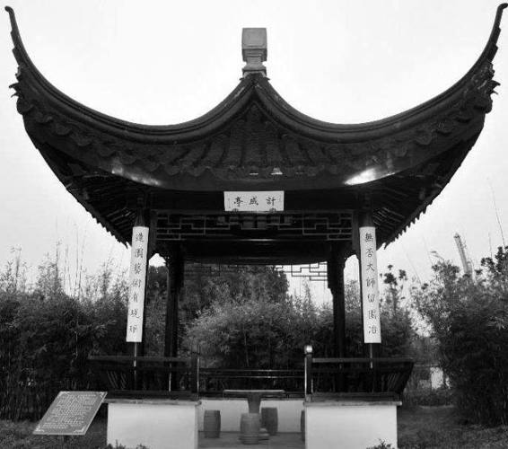
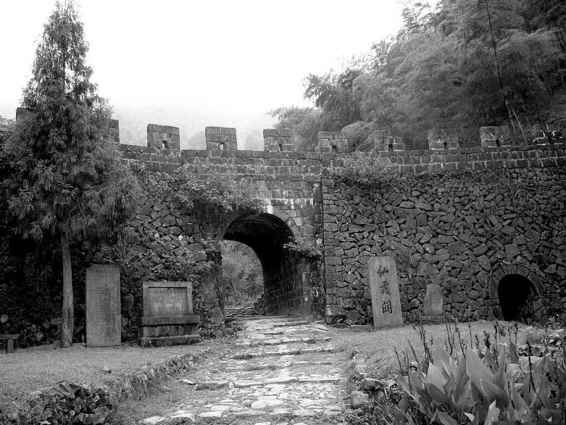

清军兵临之前，阮大铖逃离南京。钱秉镫说，他出逃的路线是先到今安徽境内的太平县，再从太平逃奔浙东，在金华投朱大典。朱大典是个没有党派色彩的正派人，钱秉镫说他跟阮大铖“交好”，所以收留了他，然而金华的士绅不乐意，“公檄声其罪，逐之出境”。阮大铖转投绍兴方国安，马士英也在那里。在绍兴待了近一年，其间，开始通敌，“杭越书信，往来不绝，大铖因是潜通降表于北，且以江东虚实启闻北帅”，为满清当卧底。“丙戌（1646）六月，贝勒渡江（钱塘江），马士英与方国安等走台州，大铖独至江头迎降，盖冯铨已荐为军前内院矣。”[102]到此为止，阮大铖写完自己从受害者一变权奸，再变叛国者的明朝篇章。
而他的清朝篇章，极短暂，转瞬即逝。其之死也，去降未久，具体日期不可确考，然据《小腆纪传》“越数日，始舁板扉上，天暑，尸虫四出”[103]描述，知当时天气犹热，应不迟于八月。
从降清至离世，阮大铖这两个月左右的余生，幸有《皖髯事实》为我们备述。情节来自其间一直与阮大铖左右相处的目击者，“耿君字伯良，粤东反正，擢升司空，戊子（1648）冬在端州刘侍郎舟中，叙其事甚详，袁总宪在坐，属予纪之。”[104]如果钱秉镫所言为实，下面一切应十分可靠。
这些记述，每个细节都给人异样感，为了确认，我反复读了多遍，终于相信，降清后的阮大铖出了问题。
其时，“大兵所过，野无青草”，清军上自内院下至从征官仅饭疏食，伙食很差。阮大铖却每每可备一桌盛馔，“邀诸公大畅其口腹”。众人皆讶，问从何而来。阮大铖这样回答：“小小运筹耳。吾之用兵，不可测度，盖不翅（同“啻”）此矣。”驴唇不对马嘴，别人只是好奇丰馔从何而来，他却夸耀自己兵法。
清军营中，初不知其戏剧大师名头，后渐耳闻，乃询之自己能唱否：
即起执板顿足，高唱以侑诸公酒。诸公北人，不省吴音，乃改唱弋阳腔（附识：此可证阮大铖确会弋阳腔），始点头称善，皆叹曰：“阮公真才子也！”每夜坐诸公帐内剧谈，听者倦，既寐有鼾声，乃出。遍历诸帐，皆如是。诘朝天未明，又已入坐帐中，聒而与之语，或育其枕上诗。诸公劳顿之余，不堪其扰，皆劝曰：“公精神异人，盍少睡一休息。”大铖曰：“吾生平不知倦欲休，六十年犹一日也。”
假如前一情节，犹不足凭，到了这里，辄可以断言：阮大铖已经精神失常。或曰，其乖常表现，是为了讨好清军。这种因素，应亦存在。但讨好清军的动机，无助于解释他的亢奋、夸张、整夜不眠、不顾体统、于他人态度和反应（厌倦、不堪其扰）浑然不觉等状。这是明显的自我意识模糊、自制力丧失、精神紊乱的表现。我们可以不认为他已彻底疯掉，但不得不说他有疯掉的迹象，或处在了疯掉的边缘。
情况还在发展。一天，忽然脸肿，大家为他担忧，对负责的人说：“老汉（是年阮虚岁六十）不宜肿面，君可相谓，令暂驻衢州，俟我辈入关取建宁后，遣人相迓。”负责人把大家意见告诉阮大铖：
大铖惊曰：“我何病？我虽年六十，能骑生马，挽强弓，铁铮铮汉子也。幸语诸公，我仇人多，此必有东林、复社诸奸徒，潜在此间（离间）我，愿诸公勿听。”又曰：“福建巡抚已在我掌握中，诸公为此言，得毋有异志耶？”
他的反应，所说每个字，皆可入《狂人日记》而无不当。所谓此必有东林复社奸徒、所谓福建巡抚已在我掌握中，是典型的妄想狂症话语。

计成亭
为纪念造园大师计成而建。其《园冶》乃世界造园学最早的名著，由阮大铖为之出版于崇祯七年。

仙霞关
位于浙江省江山市保安乡仙霞岭，地当浙、闽、赣交界处，素称“两浙之锁钥，入闽之咽喉”。1646 年夏末秋初，阮大铖随清军从仙霞关经过不久，在登岭途中，死于心脏病突发。
随后，他便死在莫名的精神亢奋中：
于是与大铖同行，既抵关下，皆骑，按辔缓行上岭。大铖独下马徒步而前，诸公呼曰：“岭路长，且骑，俟到险峻处，乃下。”大铖左牵马，右指骑者曰：“何怯也，汝看我筋力百倍于汝后生！”盖示壮以信其无病也。言讫鼓勇先登，不复望见。久之诸公始至五通岭，为仙霞最高处，见大铖马抛路口，身踞石坐，喘息始定。呼之骑不应，马上以鞭掣其辫，亦不动，视之，死矣。
直接死因，系心脏病突发——脸部水肿，正是心功能不全的明确信号。间接死因，则是精神失常。综合来看，精神失常中，他无视身体症候，反在登仙霞岭时弃马徒步，昂扬身先，遂致心脏病突发。
有明一代奸臣之殿，阮瑀、阮籍、阮咸的后人，明代顶级戏剧家、诗人和艺术全才，阮大铖、阮圆海、阮石巢、阮胡子，最终作为精神病患者死去。
近六百年来，阮大铖之死从无明说，本文以此圆之。虽出于分析，但严格依据史料，并无添油加醋。读者明鉴。
关于他何以在降清之后疯掉，还可补充一个材料。或许受曾祖阮鹗业绩感召，众所周知，阮大铖平生抱负，是自视“边才”，很愿意在抵御外侵方面有所作为。他屡有表示，一般不以为意。但南明史研究先驱者陈去病，读了《燕子笺》，认为阮大铖是严肃的，其有攘虏之心“实未昧也”：
而余尤爱其《刺奸》《平胡》诸折。觉令班超、傅介子复生，其志节亦不过尔尔。如云：“望天天护佑，仗三尽龙泉，扫除腥垢。肯做画虎无成，反落他人后。逾垣入，匕首投，这羯奴头在吾手。”词气何等壮烈。又其诗云：“霜重笳声黯不流，龙泉已斩月支头。捷书一奏天颜喜，麟阁高标郭细侯。”句亦可当凯歌读。[105]
他觉得剧中情感出于肺腑，真挚强烈，堪比边塞英雄班超、傅介子。傅介子，便是李白《塞下曲》“愿将腰下剑，直为斩楼兰”诗句所歌颂的斩杀楼兰王的西汉孤胆勇士。假如陈氏所论有参考的价值，那么可以想象，一个曾怀此等抱负的人，却以降附“羯奴”收场，小丑般混迹其间，其苦闷与不堪，将不止于面目全非、揽镜自嫌。
从这角度，他的疯掉，实不惊人。我有关他的阅读，视线一直愈益集中到一点：此人被人格分裂折磨已久。可惜，由于满足于谈论“奸臣”那一面，他这深刻的精神困境，不论当时或以后，都还不曾引起注意。
[1] 梁启超《中国历史研究法》，华东师大出版社，1995，第20页。
[2] 梁启超《中国历史研究法》，华东师大出版社，1995，第44-45页。
[3] 张廷玉等《明史》卷三百零八，中华书局，1974，第7937页。
[4] 徐鼒《小腆纪传》，中华书局，1958，第706页。
[5] 张岱《石匮书后集列传》，周骏富辑《明代传记丛刊•综录类11》，明文书局，1991，第395页。
[6] 朱倓《明季桐城中江社考》，《国立中央研究院历史语言研究所集刊》第一本第二分，民国十九年，第253页。
[7] 李春芳《都察院右副都御史 峰阮公墓志铭》，《李文定公贻安堂集》卷七，李戴刻本，明万历十七年，国家图书馆藏（缩微品）。
[8] 《康熙字典》子集下，上海共和书局石印，民国己巳年，第12页。
[9] 阮易路修《阮氏宗谱》，文焕堂活字本，清道光十年，国家图书馆藏。
[10] 曹丕《典论•论文》，郭绍虞主编《中国历代文论选》上册，中华书局，1962，第124页。
[11] 房玄龄等《晋书》卷四十九，中华书局，1974，第1362页。
[12] 同上，第1363页。
[13] 同上。
[14] 同上，第1362页。
[15] 房玄龄等《晋书》卷四十九，中华书局，1974，第1361页。
[16] 马其昶《桐城耆旧传》，黄山书社，1990，第61页。
[17] 高阳《草莽英雄》，海南出版社，1996，第297-298页。
[18] 马其昶《桐城耆旧传》，黄山书社，1990，第61页。
[19] 顾起元《中大夫河南等处承宣布政使司右参政兼按察司佥事盛唐阮公墓志铭》，沈云龙主编《明人文集丛刊23•嫩真草堂集》卷二十二，台北文海出版社，1970，影印本。
[20] 钱谦益《列朝诗集小传》丁集下，周骏富辑《明代传记丛刊•学林类9》，明文书局，1991，第686页。
[21] 钱谦益《列朝诗集小传》丁集上，同上，第485页。
[22] 钱谦益《列朝诗集小传》丁集下，同上，第686页。
[23] 刘致中《阮大铖家世考》，《文献季刊》，2004年7月第3期。
[24] 马其昶《桐城耆旧传》，黄山书社，1990，第81页。
[25] 郑雷《阮大铖丛考（上）》，华侨大学学报（哲学社会科学版），2004年第1期。
[26] 康熙《怀宁县志》卷二十五文学志。转自郑雷《阮大铖丛考（上）》，华侨大学学报（哲学社会科学版），2004年第1期。
[27] 马其昶《桐城耆旧传》，黄山书社，1990，第61页。
[28] 同上，第80页。
[29] 同上，第81页。
[30] 马其昶《桐城耆旧传》，黄山书社，1990，第80页。
[31] 同上。
[32] 张廷玉等《明史》卷二百零五，中华书局，1974，第5415页。
[33] 马其昶《桐城耆旧传》，黄山书社，1990，第80页。
[34] 李春芳《都察院右副都御史 峰阮公墓志铭》，《李文定公贻安堂集》卷七，李戴刻本，明万历十七年，国家图书馆藏（缩微品）。
[35] 马其昶《桐城耆旧传》，黄山书社，1990，第81页。
[36] 陈继儒《 山阮中丞外传》，《陈眉公先生全集》卷三十，国家图书馆馆藏湖北省图书馆1988年缩微制品。
[37] 马其昶《桐城耆旧传》，黄山书社，1990，第81页。
[38] 顾起元《中大夫河南等处承宣布政使司右参政兼按察司佥事盛唐阮公墓志铭》，沈云龙主编《明人文集丛刊23•嫩真草堂集》卷二十二，台北文海出版社，1970，影印本。
[39] 《留都防乱公揭》，《国粹学报》，国粹学报馆，1910年，第七十四期。
[40] 顾起元《中大夫河南等处承宣布政使司右参政兼按察司佥事盛唐阮公墓志铭》，沈云龙主编《明人文集丛刊23•嫩真草堂集》卷二十二，台北文海出版社，1970，影印本。
[41] 黄裳《咏怀堂诗》，《读书》，1981年第6期。
[42] 张岱《石匮书后集列传》，周骏富辑《明代传记丛刊•综录类11》，明文书局，1991，第395页。
[43] 钱秉镫《皖髯事实》，《藏山阁集》，黄山书社，2004，第432页。
[44] 张廷玉等《明史》卷三百零八，中华书局，1974，第7937页。
[45] 钱秉镫《皖髯事实》，《藏山阁集》，黄山书社，2004，第432页。
[46] 温睿临《南疆逸史》，中华书局，1959，第445页。
[47] 钱秉镫《皖髯事实》，《藏山阁集》，黄山书社，2004，第432页。
[48] 温睿临《南疆逸史》，中华书局，1959，第445页。
[49] 钱秉镫《皖髯事实》，《藏山阁集》，黄山书社，2004，第432页。
[50] 钱秉镫《皖髯事实》，《藏山阁集》，黄山书社，2004，第432-433页。
[51] 同上，第433页。
[52] 钱秉镫《皖髯事实》，《藏山阁集》，黄山书社，2004，第433页。
[53] 朱倓《明季桐城中江社考》，《国立中央研究院历史语言研究所集刊》第一本第二分，民国十九年，第254页。
[54] 叶灿《诗序》，《咏怀堂诗集•咏怀堂诗外集》，《续修四库全书》集部•别集类，上海古籍出版社，2001，第328页。
[55] 朱倓《明季桐城中江社考》，《国立中央研究院历史语言研究所集刊》第一本第二分，民国十九年，第251页。
[56] 钱 禄《先公田间府君年谱》，《国粹学报》，国粹学报馆，1910年，第七十五期。
[57] 同上。
[58] 钱秉镫《皖髯事实》，《藏山阁集》，黄山书社，2004，第434页。
[59] 钱秉镫《皖髯事实》，《藏山阁集》，黄山书社，2004，第435页。
[60] 徐鼒《小腆纪传》，中华书局，1958，第708页。
[61] 同上。
[62] 李清《三垣笔记》，中华书局，1997，第118页。
[63] 夏完淳《续幸存录》，《明季稗史初编》，上海书店，1988，第326页。
[64] 同上。
[65] 李清《三垣笔记》，中华书局，1997，第119页。
[66] 夏完淳《续幸存录》，《明季稗史初编》，上海书店，1988，第326页。
[67] 钱秉镫《皖髯事实》，《藏山阁集》，黄山书社，2004，第435页。
[68] 黄裳《咏怀堂诗》，《读书》，1981年第6期。
[69] 柳诒徵《咏怀堂诗集跋》，胡金望、汪长林点校《咏怀堂诗集》附录，黄山书社，2004，第529页。
[70] 胡先骕《读阮大铖咏怀堂诗集》，胡金望、汪长林点校《咏怀堂诗集》附录，黄山书社，2004，第531页。
[71] 罗哲文《总序》，《园冶注译》，中国建筑工业出版社，1998，卷首（无页码）。
[72] 同上。
[73] 阚铎《园冶识语》，《园冶注译》，中国建筑工业出版社，1998，第23页。
[74] 阮大铖《冶叙》，同上，第32页。
[75] 阮大铖《改筑集园诗六章》其六，胡金望、汪长林点校《咏怀堂诗集》，黄山书社，2004，第236页。
[76] 阮大铖《计无否理石兼阅其诗》，胡金望、汪长林点校《咏怀堂诗集》，黄山书社，2004，第249页。
[77] 阮大铖《春灯谜自序》，《阮大铖戏曲四种》，黄山书社，1993，第5页。
[78] 陈维崧《奉贺冒巢民老伯暨伯母苏孺人五十双寿序》，冒襄《同人集》卷之二，水绘庵清刻本，北京师范大学图书馆藏。
[79] 阮大铖《春灯谜自序》，《阮大铖戏曲四种》，黄山书社，1993，第5页。
[80] 同上。
[81] 同上，第6页。
[82] 沈士柱《阮大铖祭文》，胡金望、汪长林点校《咏怀堂诗集》，黄山书社，2004，第520页。
[83] 张岱《陶庵梦忆•西湖梦寻》，上海古籍出版社，1982，第73-74页。
[84] 陈植《园冶注译序》，《园冶注译》，中国建筑工业出版社，1998，第5页。
[85] 阚铎《园冶识语》，同上，第23页。
[86] 陈植《园冶注译序》，同上，第5页。
[87] 胡先骕《读阮大铖咏怀堂诗集》，胡金望、汪长林点校《咏怀堂诗集》附录，黄山书社，2004，第532页。
[88] 据柳诒徵有《咏怀堂诗集跋》，当发现于丁氏八千卷楼。
[89] 胡先骕《读阮大铖咏怀堂诗集》，胡金望、汪长林点校《咏怀堂诗集》附录，黄山书社，2004，第532页。
[90] 《咏怀堂诗集》刻印一年后，又有新发现，而出盋山精舍1929年版《咏怀堂诗补遗》。
[91] 陈三立《咏怀堂诗集题记》，胡金望、汪长林点校《咏怀堂诗集》附录，黄山书社，2004，第528页。
[92] 同上。
[93] 黄山书社版印为“律诗散不逮”，疑误，据他本改。
[94] 章炳麟《咏怀堂诗集题记》，胡金望、汪长林点校《咏怀堂诗集》附录，黄山书社，2004，第529页。
[95] 柳诒徵《咏怀堂诗集跋》，同上，第530-531页。
[96] 钱仲联《评阮大铖诗》，同上，第538-539页。
[97] 胡先骕《读阮大铖咏怀堂诗集》，胡金望、汪长林点校《咏怀堂诗集》附录，黄山书社，2004，第532页。
[98] 同上，第533-534页。
[99] 陆定一《对于学术性质、艺术性质、技术性质的问题要让它自由》，《陆定一文集》，人民出版社，1992，第495页。
[100] 叶灿《诗序》，《咏怀堂诗集•咏怀堂诗外集》，《续修四库全书》集部•别集类，上海古籍出版社，2001，第326-327页。
[101] 阮大铖《同白瑕仲石塘湖上行即望其所居》，同上，第354页。
[102] 钱秉镫《皖髯事实》，《藏山阁集》，黄山书社，2004，第435页。
[103] 徐鼒《小腆纪传》，中华书局，1958，第709页。
[104] 钱秉镫《皖髯事实》，《藏山阁集》，黄山书社，2004，第438页。
[105] 陈去病《五石脂》，《丹午笔记•吴城日记•五石脂》，江苏古籍出版社，1999，第352页。